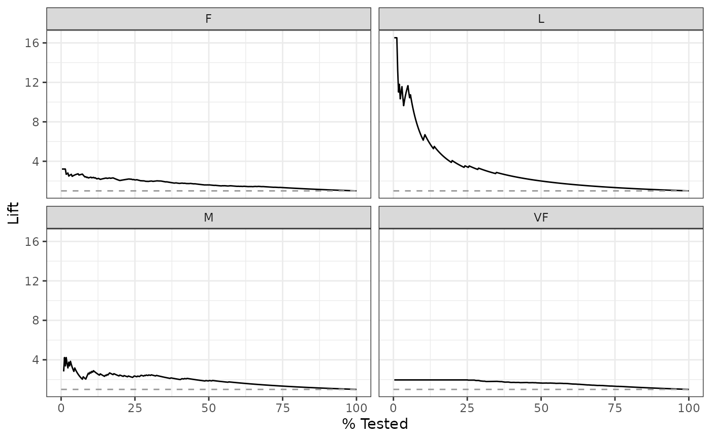
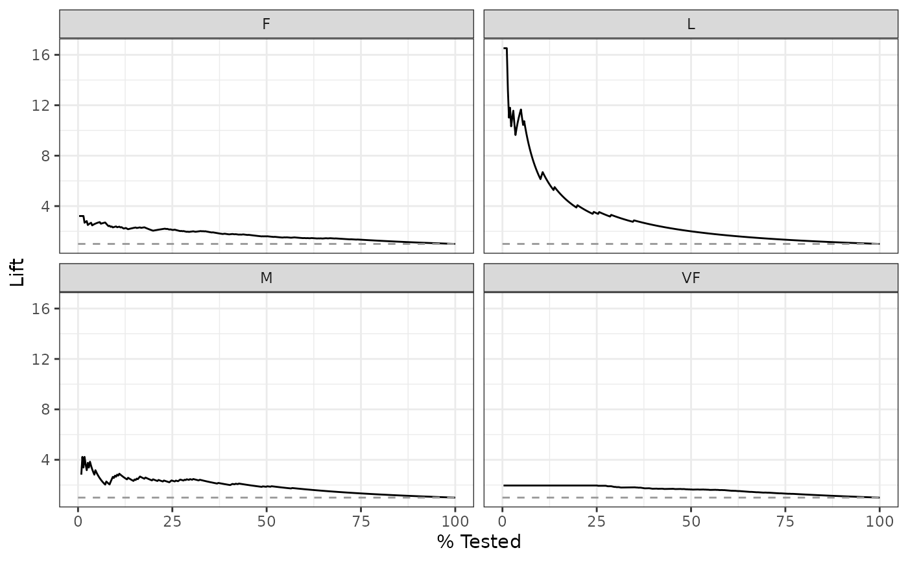

lift_curve() constructs the full lift curve and returns a tibble. See
gain_curve() for a closely related concept.
Usage
lift_curve(data, ...)
# S3 method for class 'data.frame'
lift_curve(
data,
truth,
...,
na_rm = TRUE,
event_level = yardstick_event_level(),
case_weights = NULL
)Arguments
- data
A
data.framecontaining the columns specified bytruthand....- ...
A set of unquoted column names or one or more
dplyrselector functions to choose which variables contain the class probabilities. Iftruthis binary, only 1 column should be selected, and it should correspond to the value ofevent_level. Otherwise, there should be as many columns as factor levels oftruthand the ordering of the columns should be the same as the factor levels oftruth.- truth
The column identifier for the true class results (that is a
factor). This should be an unquoted column name although this argument is passed by expression and supports quasiquotation (you can unquote column names). For_vec()functions, afactorvector.- na_rm
A
logicalvalue indicating whetherNAvalues should be stripped before the computation proceeds.- event_level
A single string. Either
"first"or"second"to specify which level oftruthto consider as the "event". This argument is only applicable whenestimator = "binary". The default uses an internal helper that defaults to"first".- case_weights
The optional column identifier for case weights. This should be an unquoted column name that evaluates to a numeric column in
data. For_vec()functions, a numeric vector,hardhat::importance_weights(), orhardhat::frequency_weights().
Value
A tibble with class lift_df or lift_grouped_df having
columns:
.nThe index of the current sample..n_eventsThe index of the current unique sample. Values with repeatedestimatevalues are given identical indices in this column..percent_testedThe cumulative percentage of values tested..liftFirst calculate the cumulative percentage of true results relative to the total number of true results. Then divide that by.percent_tested.
If using the case_weights argument, all of the above columns will be
weighted. This makes the most sense with frequency weights, which are integer
weights representing the number of times a particular observation should be
repeated.
Details
There is a ggplot2::autoplot() method for quickly visualizing the curve.
This works for binary and multiclass output, and also works with grouped data
(i.e. from resamples). See the examples.
Gain and Lift Curves
The motivation behind cumulative gain and lift charts is as a visual method
to determine the effectiveness of a model when compared to the results one
might expect without a model. As an example, without a model, if you were to
advertise to a random 10% of your customer base, then you might expect to
capture 10% of the of the total number of positive responses had you
advertised to your entire customer base. Given a model that predicts which
customers are more likely to respond, the hope is that you can more
accurately target 10% of your customer base and capture >10% of the total
number of positive responses.
The calculation to construct lift curves is as follows:
truthandestimateare placed in descending order by theestimatevalues (estimatehere is a single column supplied in...).The cumulative number of samples with true results relative to the entire number of true results are found.
The cumulative
%found is divided by the cumulative%tested to construct the lift value. This ratio represents the factor of improvement over an uninformed model. Values>1 represent a valuable model. This is the y-axis of the lift chart.
Multiclass
If a multiclass truth column is provided, a one-vs-all
approach will be taken to calculate multiple curves, one per level.
In this case, there will be an additional column, .level,
identifying the "one" column in the one-vs-all calculation.
Relevant Level
There is no common convention on which factor level should
automatically be considered the "event" or "positive" result
when computing binary classification metrics. In yardstick, the default
is to use the first level. To alter this, change the argument
event_level to "second" to consider the last level of the factor the
level of interest. For multiclass extensions involving one-vs-all
comparisons (such as macro averaging), this option is ignored and
the "one" level is always the relevant result.
See also
Other curve metrics:
gain_curve(),
pr_curve(),
roc_curve()
Examples
# ---------------------------------------------------------------------------
# Two class example
# `truth` is a 2 level factor. The first level is `"Class1"`, which is the
# "event of interest" by default in yardstick. See the Relevant Level
# section above.
data(two_class_example)
# Binary metrics using class probabilities take a factor `truth` column,
# and a single class probability column containing the probabilities of
# the event of interest. Here, since `"Class1"` is the first level of
# `"truth"`, it is the event of interest and we pass in probabilities for it.
lift_curve(two_class_example, truth, Class1)
#> # A tibble: 501 × 4
#> .n .n_events .percent_tested .lift
#> <dbl> <dbl> <dbl> <dbl>
#> 1 0 0 0 NaN
#> 2 1 1 0.2 1.94
#> 3 2 2 0.4 1.94
#> 4 3 3 0.6 1.94
#> 5 4 4 0.8 1.94
#> 6 5 5 1 1.94
#> 7 6 6 1.2 1.94
#> 8 7 7 1.4 1.94
#> 9 8 8 1.6 1.94
#> 10 9 9 1.8 1.94
#> # ℹ 491 more rows
# ---------------------------------------------------------------------------
# `autoplot()`
library(ggplot2)
library(dplyr)
# Use autoplot to visualize
autoplot(lift_curve(two_class_example, truth, Class1))
 # Multiclass one-vs-all approach
# One curve per level
hpc_cv |>
filter(Resample == "Fold01") |>
lift_curve(obs, VF:L) |>
autoplot()

# Same as above, but will all of the resamples
hpc_cv |>
group_by(Resample) |>
lift_curve(obs, VF:L) |>
autoplot()
# Multiclass one-vs-all approach
# One curve per level
hpc_cv |>
filter(Resample == "Fold01") |>
lift_curve(obs, VF:L) |>
autoplot()

# Same as above, but will all of the resamples
hpc_cv |>
group_by(Resample) |>
lift_curve(obs, VF:L) |>
autoplot()